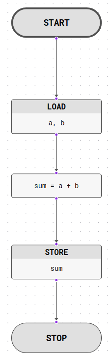
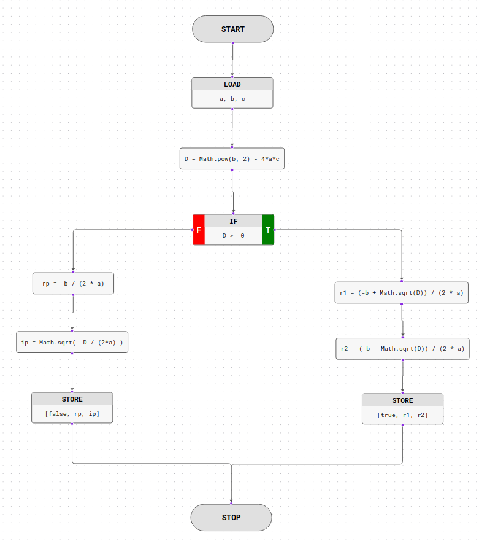
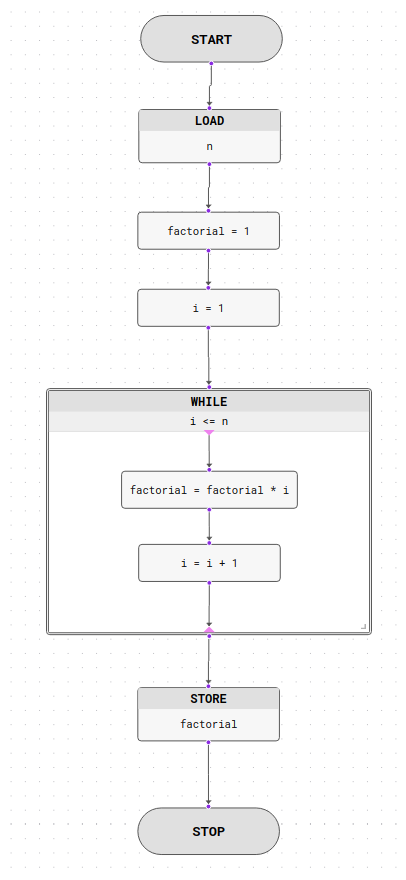
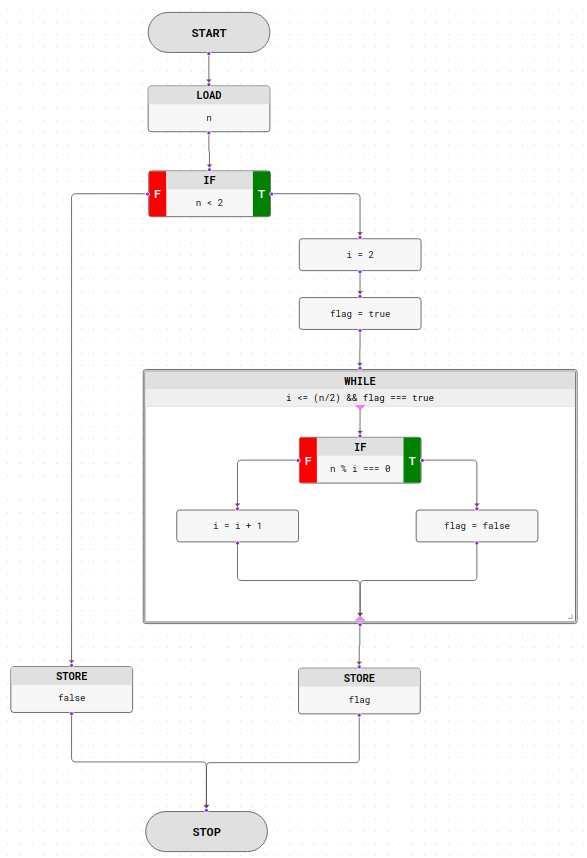
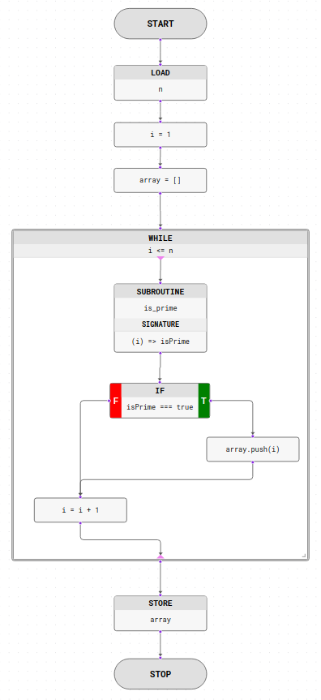

Introduction
This is a simple web application that allows you to add, edit, and delete flowers. You can export your flowchart as a pseudo-code and also as an PNG image.
Program consists of three main parts:
- Navigation and Menu: App name and icon, project title and menu items stored in here.
- Toolbar: Simulation controls, block add button and watch display button are here.
- Board: This is where the blocks and their connections showed in an interactive display. You can move, drag, zoom in/out the display. There is also a minimap which helps to get an overview of your flowchart.
Navigation and Menu
Navigation Bar
The navigation bar is the top bar of the application. It contains the app name and icon, and the project title.
Project title is the name of the project that you are currently working on. You can change it by clicking on the project title on the navbar and typing in a new name.
The name of the project is also used as the name of the subroutine name that can be used in the Function Block.
Menu
Menu items and their functions are listed below:-
File:
- New: Create a new project.
- Open: Open an existing (downloaded) project.
- Save: Save the current project in the browser memory.
- Download: Download the current project, which can be used in Function Block.
- Export: Export the current project as a pseudo-code or PNG image.
-
Project:
- Find: List all blocks and focus on click.
- Input Parameters: Add input parameters to the project. These parameters will be automatically used when a Load Block encountered.
- Output History: Show the history of the output values generated by Store Block.
- Analyze: Analyze the current project. Displays cyclomatic complexity and block count.
-
Help:
- How to Use: Show this manual.
- About: Show the application information.
Toolbar
Toolbar contains simulation controls, block add button and watch display button.Simulation Controls
The simulation controls are used to control the simulation. You can start, stop and run the simulation step by step.
If you want to step automatically you can click the resume/pause button. The speed of the automatic simulation can be adjusted by using the speed slider which is located at the right of the control buttons.
The block to be processed will be highlighted.
Once you started the simulation, you can no longer add or edit blocks, and save, open, download buttons are disabled.
Adding Block
By clicking the button a sidebar will pop up. The sidebar contains a list of all available blocks.
You can click on the block name to add the block to the flowchart.
Watch Display
By clicking the button, a sidebar will pop up. The sidebar contains the values of the variables that are used in the flowchart.
You can watch the values in real time while the simulation is running.
Board
Blocks and their connections are displayed here. You can edit and view your flowchart here.
Display-related Actions
- You can move the display.
- You can zoom in/out the display.
- You can show and hide the minimap. Minimap might help you to get an overview of your flowchart.
- You can fit the display to the board. This will zoom out the display to fit the board.
- If your flowchart is too big, fit feature may not work as intented.
Block-related Actions
- You can drag blocks.
- You can double click on the block to open its modal.
- You can select a block by click on it. In order to select multiple blocks apply CTRL+click on them. You can move multiple blocks after multiple-select with ease.
- You can press Delete on keyboard to remove block(s) after selecting it/them.
- These keyboard shortcuts sometimes do not work and requires page refresh to get fixed.
Connection-related Actions
- You can create connections by connecting block handles (the blue dots). The mouse icon changes to indicate a connection creation.
-
If you need to move a connection to another block, ie. changing source or target block of the connection,
- Move your mouse around the desired block's handle. The mouse icon will be change accordingly (this icon is different from the create connection action.)
- Click and drag the connection to desired block's handle. when the mouse icon is changed
- To remove a connection, do the same thing as updating a connection but do not connect any other handle, simply drop your connection line on the blank canvas.
-
In mobile,
- Connecting: you need to click the first handle and than the second one. It may require multiple trials :)
- Removing: you need to click around the handle and then blank area on the canvas.
- Updating: you need to click the handle and then the next handle you want to connect.
Features
There are two main features that FlowerApp brings a solution for. These are the simulating a flowchart and exporing into various formats.
Simulation
Writing a program in FlowerApp has the following benefits:
- Easy to learn
- Helps to understand structured language
- Forces to create correct flowcharts in a natural way. If something looks bad, probably, its not right!
- It can be run on all modern browsers which is easy access.
Even though you can write anything you want into the blocks, if you want to run your flowchart you have to follow FlowerApp syntax which is very similar to JavaScript. Therefore, it is a great start to learning JavaScript also!
Flowchart consists of blocks and connections between them. Blocks are the building materials of the flowchart. Blocks can be connected to each other by connecting the blue dots (handles).
The flowchart will run from the START block to the STOP block. If there are any blocks that are not connected or there are more than one START or STOP blocks the flowchart counted as invalid and the simulation will not run.
Each block performs a set of actions that can be executed. Some may branch to other blocks, some may calculate a value and assign variable, or loop through a set of blocks, etc. You, as a programmer, tell what kind of actions are executed in what order in the flowchart.
Each block type detailed under the Blocks section. Please refer to the Blocks section for more information.
Data Types
FlowerApp supports the following data types:
- String - a sequence of characters.
- Number - a sequence of digits.
- Boolean - a true or false value.
- Array - a list of values.
- Null is a special value that represents the intentional absence of a value.
String
A string is a sequence of characters. You can use double quotes to define a string.
Strings are JavaScript objects. Therefore, you can use string methods to manipulate strings. You can use + to concantate
strings
Examples:
str = "Hello World!"orstr = "Hello" + " World!"str.lengthreturns the length of the string.str.charAt(0)returns the character at the specified index.str.indexOf("o")returns the index of the first occurrence of the specified value.-
str.substring(0, 4)returns the substring starting at the specified index and up to, but not including, the specified end index. str.toUpperCase()returns the string in upper case.str.toLowerCase()returns the string in lower case.str.replace("World", "Universe")replaces all occurrences of the specified value.str.split(" ")splits the string into an array of substrings.str.trim()removes whitespace from both ends of the string.str.concat("!", "?")concatenates the string with the specified value.
Number
Numbers are JavaScript numbers which are 64-bit floating point. Numbers can be written with or without decimals.
x = 3.14- A number with decimalsx = 3- A number without decimalsx = 3.14e-10- A number with decimals and scientific notationx = 3.14e10- A number with decimals and scientific notation
You can perform arithmetic operations on Numbers.
- Addition -
5 + 4 - Subtraction -
4 - 15 - Multiplication -
12 * 178 - Division -
34 / 11 - Modulo -
64 % 51
Again, you can use some methods of JavaScript numbers:
x.toString()returns the number as a string.x.toFixed(2)returns a string, with the number written with a specified number of decimals.x.toExponential(2)returns a string, with a number rounded and written using exponential notation.x.toPrecision(2)returns a string, with a number written with a specified length.
You can use Math library to perform common mathematical operations like random number generation.
Math.random()returns a random number between 0 and 1.Math.trunc()returns the integer part of a number by removing any fractional digits.Math.floor(x)returns the largest integer less than or equal to the specified number.Math.ceil(x)returns the smallest integer greater than or equal to the specified number.Math.round(x)returns the nearest integer to the specified number.Math.abs(x)returns the absolute value of the specified number.Math.pow(x, y)returns the value of the specified number raised to the specified power.Math.sqrt(x)returns the square root of the specified number.Math.min(x, y)returns the smaller of the two specified numbers.Math.max(x, y)returns the larger of the two specified numbers.Math.sin(x)returns the sine of the specified angle.Math.cos(x)returns the cosine of the specified angle.Math.tan(x)returns the tangent of the specified angle.Math.atan(x)returns the angle whose tangent is the specified number.Math.atan2(x, y)returns the angle whose tangent is the quotient of two specified numbers.Math.log(x)returns the natural logarithm of the specified number.Math.log10(x)returns the base 10 logarithm of the specified number.Math.exp(x)returns the specified number raised to the power of Euler's number.Math.PIreturns the value of pi.Math.Ereturns the value of e.
Boolean
Boolean represents one of two values: true or false. Very often, in programming, you will need a data type that can only have one of two values, like yes/no, on/off, or true/false.
Booleans used for conditioning and logical operations. You can apply following operations to booleans:
- Logical AND -
true && true→true - Logical OR -
true || false→true - Logical NOT -
!true→false
Comparision operators:
x == y-xis equal toyx != y-xis not equal toyx === y-xis equal toyand they are of the same typex !== y-xis not equal toyor they are not of the same typex > y-xis greater thanyx < y-xis less thanyx >= y-xis greater than or equal toyx <= y-xis less than or equal toy
Array
An array is a list of values. The values can be of any type. The order of the values is important and each value can be accessed by its index. An array can be created by using square brackets. The values inside the square brackets are separated by commas.
Arrays are JavaScript objects. The syntax is similar to that of JavaScript.
Examples:
arr = [1, 2, 3]- a number arrayarr = ["a", "b", "c"]- a string arrayarr = [true, false]- a boolean arrayarr = [true, 1, 2, "hello!!"]- an array of different typesarr.push(4)- add a value to the end of the arrayarr.pop()- remove the last value from the array and return it.arr.shift()- remove the first value from the arrayarr.unshift(0)- add a value to the beginning of the arrayarr.splice(1, 1)- remove the value at index 1 from the arrayarr.slice(1, 2)- return a new array with the values at index 1 and 2arr.indexOf(2)- return the index of the value 2arr.join("-")- return a string with the values separated by the character "-"arr.sort()- sort the values in the arrayarr.reverse()- reverse the order of the values in the array-
arr.concat(["d", "e", "f"])- return a new array with the values from the original array and the values from the array passed as a parameter
Examples
In this section you will find some examples of various algorithms written in FlowerApp. I higly encourage you to realise them in your browser.
| Flowchart | Description | Simulation |
|---|---|---|
|  | Add two numbers entered by the user |
Input:
Output: |
|  |
Find Root of the quadratic equation ax2 + bx + c = 0 First element of the returned array indicates equation has a solution or not. |
Input:
Output: |
|  | Find the factorial of a number with a loop. |
Input:
Output: |
|  | Check whether a number is prime or not |
Input:
Output: |
|  |
Find all primes up to N In this flowchart |
Input:
Output: |
Exporting
This feature of the program does not require a lot of knowledge about the programming language. It is just a simple way to export your flowchart into various formats. You can write whatever you want in the code of the blocks and export it to the desired format, since we are not simulating it.Image Exporting
You can export the flowchart into a PNG image file. To do so, follow File > Export path in the menu and select second option in the opened modal.
This feature implemented as converting DOM element (the Board) into an image file. Therefore, it is simulates a screenshot of the board display.
- If your flowchart does not fit into the board, the resulting image will not contain the whole flowchart but a part of it.
- Control buttons and the minimap (if not hidden) will be present on the exported image.
Code Exporting
You can export the flowchart into a pseudo-code. Every valid (detailed under) flowchart can be exported this way.
After selecting File > Export menu item, you will be presented with a modal that contains "Pseudocode" with gears button. Clicking on the gears button will generate the code.
A valid flowchart means each block is correctly connected. Since the process produces a pseudo-code the texts of the blocks do not matter.
Blocks
Blocks are the building material of your flowchart. In this section, available blocks are described. If you want to learn about interacting with blocks, please refer to Board section.
Every block has an id that is unique to that block. This can be used to select/find the desired block. Moreover, you can specify a name for a block to easier access.
START Block
| Description: | The START block marks the beginning of the flowchart. |
| Input Details: | This block does not take any inputs. |
| On Successful Execution: | The flow will proceed to the next connected block. |
| Notes: |
|
STOP Block
| Description: | The STOP block marks the endpoint of the flowchart. |
| Input Details: | This block does not take any inputs. |
| On Successful Execution: | The simulation should end. |
| Notes: |
|
STATEMENT Block
| Description: | The STATEMENT block is used to execute a statement. This block is used to execute a statement, such as a variable assignment, but not a function call. |
| Input Details: |
|
| On Successful Execution: | Statement is executed and the result stored in the memory, and the flow will proceed to the next connected block. |
| Notes: |
|
DECISION Block
| Description: | The DECISION block is used to create branches in a flow. It enables to change the work logic of the program by the given expression. |
| Input Details: |
|
| On Successful Execution: |
The flow will continue on the block connected to TRUE or FALSE handles according to the value of the
expression.
|
| Notes: |
|
LOAD Block
| Description: | The LOAD block is used to gather information from user. |
| Input Details: |
|
| On Successful Execution: | Input values assigned to the variables, after that, the flow will proceed to the next connected block. |
| Notes: |
|
STORE Block
| Description: | The STORE block is used to display information to the user. |
| Input Details: |
|
| On Successful Execution: | The flow will proceed to the next connected block. |
| Notes: |
|
WHILE Loop Block
| Description: | The WHILE block is used to execute a block of code while a condition is true. |
| Input Details: |
|
| On Successful Execution: | The flow will loop through the child blocks (next executed block is the connected by the blue-violet colored triangular handle) while the condition is true. If the condition is false, the flow will continue through the block that is connected from the outer handle (blue dot handle). |
| Notes: |
|
FUNCTION Block
| Description: | The FUNCTION block is used to call a subroutine. Subroutines are the flowcharts that downloaded via File > Download menu item. |
| Input Details: |
|
| On Successful Execution: | Subroutine called with the given parameters and returned value stored into memory. The flow will proceed to the next connected block. |
| Notes: |
|